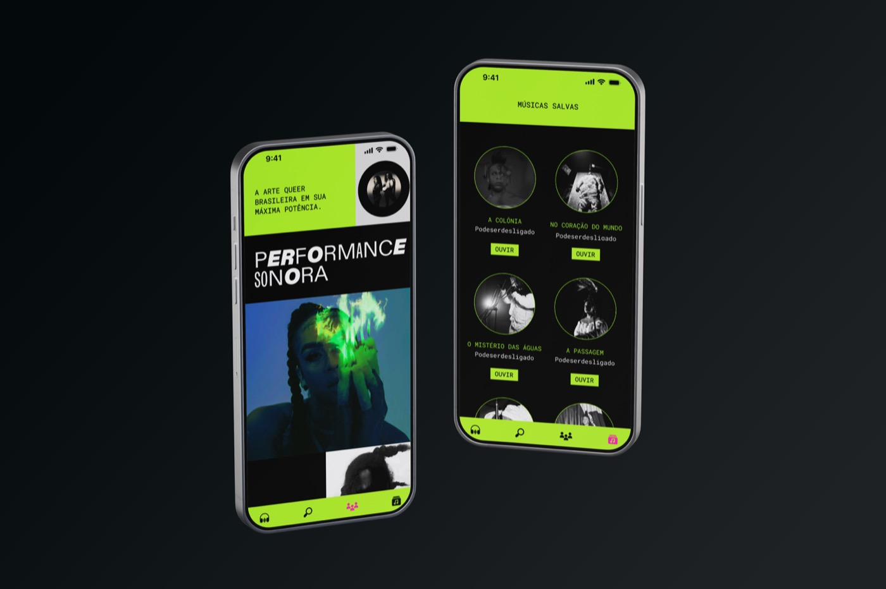
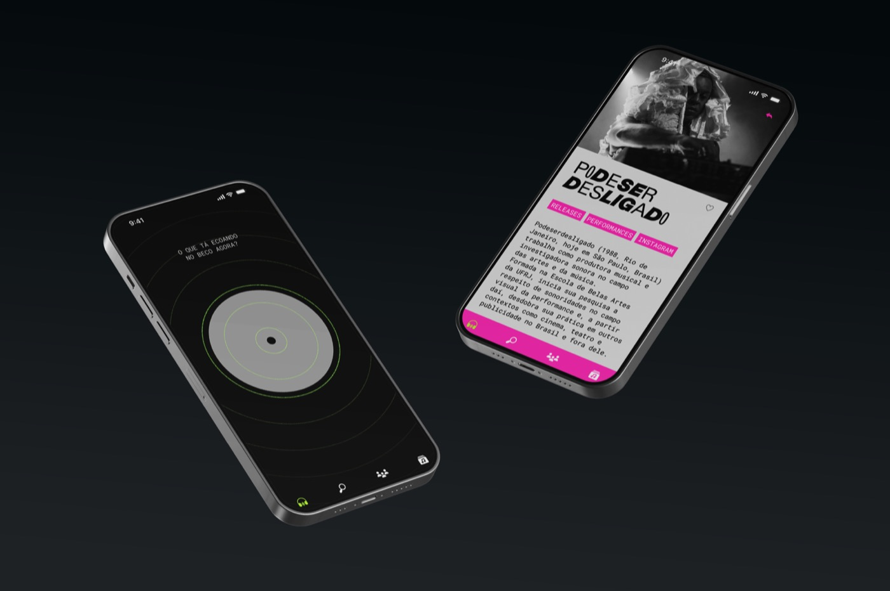

Design por Cecília Cartaxo, Glauber Montimor e Rian Souza
2025
Sobre
Beco: um ecossistema comunitário dedicado a conectar e fortalecer a produção cultural LGBT+. Superando a lógica limitada dos algoritmos comerciais, o aplicativo opera como uma rede viva de trocas, onde músicos, artistas visuais e criadores dissidentes encontram seus pares e expandem seus públicos.
Como projetar interfaces para a dissidência? O aplicativo foi permeado por essa questão central, que guiou cada etapa da construção do protótipo. Buscamos entender como o design pode servir como uma ferramenta política e social, escapando dos padrões heteronormativos de usabilidade para criar uma experiência que ressoe com a vivência da nossa comunidade.
A interface do Beco foi moldada para romper com a padronização das plataformas convencionais, priorizando uma navegabilidade afetiva e visualmente pulsante. Através de um design system que celebra a estética queer, o protótipo materializa funcionalidades que vão além do consumo passivo, criando espaços para curadoria comunitária e apoio direto aos artistas. O resultado é um espaço digital que não apenas hospeda música, mas sustenta a identidade e a arte dissidente brasileira.
O que eu fiz
design de interação e programação criativa para as animações (p5.js)


